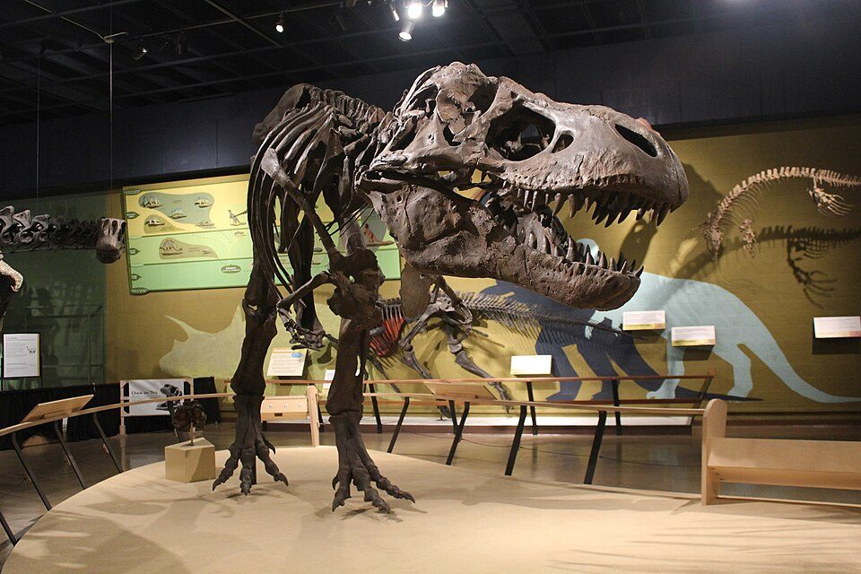

Evolution
Darwin, natural selection and DNA: how living things change over time, from dinosaurs to birds and from the first hominins to Atapuerca.


"Nothing in biology makes sense except in the light of evolution," wrote the geneticist Theodosius Dobzhansky. Evolution explains why there are so many species, why they resemble one another and why each fits its environment so well.
Darwin's voyage
In 1831 a 22-year-old English naturalist, Charles Darwin, set sail on the Beagle on a round-the-world voyage that lasted five years. On the Galápagos Islands he noticed that the finches on each island had different beaks, suited to what they ate: hard seeds, insects or cactus. It seemed to him they all came from a common ancestor that had arrived from the mainland.
He spent more than twenty years gathering evidence before publishing his idea. He made up his mind in 1858, when he received a letter from another naturalist, Alfred Russel Wallace, who had independently reached the same conclusion in Indonesia. In 1859 he published On the Origin of Species: the first edition sold out on the day it appeared.
How natural selection works
1. Individuals of a species are not identical: they vary in size, colour, hardiness. 2. Some of those differences are inherited. 3. More individuals are born than can survive. 4. Those with traits that are more advantageous in their environment survive and reproduce more, and pass those traits on.
Generation after generation, populations change. Given enough time, millions of years, new species arise.
DNA, the missing piece
Darwin did not know how traits were inherited. The monk Gregor Mendel began to explain it with his peas, and the 1953 discovery of the DNA double helix by James Watson and Francis Crick, thanks largely to an X-ray image by Rosalind Franklin, completed the picture. Today, by comparing the DNA of different species, we can rebuild the tree of life: we share about 98.8% of our DNA with chimpanzees and around 60% with bananas.
Birds are dinosaurs
Dinosaurs ruled the Earth for about 165 million years. Not all of them died out: a group of small feathered dinosaurs survived the asteroid and gave rise to birds. In evolutionary terms, a chicken is more closely related to Tyrannosaurus rex than T. rex is to Stegosaurus.

_at_Cleveland_Museum_of_Natural_History.jpg){kind=link}
Human evolution
We are not descended from monkeys: we share with chimpanzees a common ancestor that lived some 6 to 7 million years ago in Africa. Some milestones:
| Species | When | Notable fact |
|---|---|---|
| Australopithecus afarensis | 3.9 to 2.9 million years | "Lucy", found in Ethiopia in 1974; already walked upright |
| Homo habilis | 2.4 to 1.4 million | Made stone tools |
| Homo erectus | 1.9 million to 110,000 years | The first to leave Africa and master fire |
| Homo antecessor | ≈ 850,000 years | Discovered at Atapuerca (Burgos, Spain) in 1994 |
| Homo neanderthalensis | 400,000 to 40,000 years | Buried their dead; Europeans carry ≈ 2% Neanderthal DNA |
| Homo sapiens | From ≈ 300,000 years ago | The oldest fossils come from Morocco |
The sites of the Sierra de Atapuerca, a World Heritage Site, are among the most important places in the world for understanding human evolution. The Sima de los Huesos ("Pit of Bones") has yielded the remains of about 30 individuals from some 430,000 years ago, the largest collection of human fossils from that period. In 2025 the oldest human face in western Europe, more than 1.1 million years old, was presented there.
Videos to understand it better
- How Evolution worksKurzgesagt – In a Nutshell · 11.5M views
- Myths and misconceptions about evolution - Alex GendlerTED-Ed · 3.3M views
Videos are from YouTube and belong to their creators. They only load when you click them. See all videos →